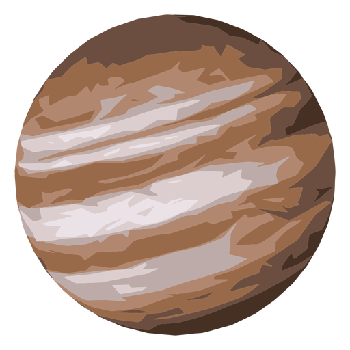
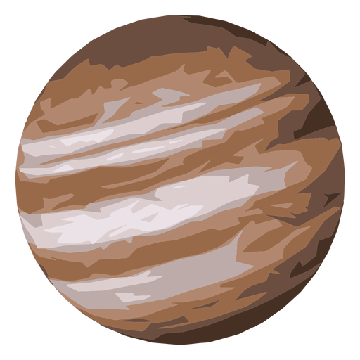

Para alcançar o nível de evolução no qual encontra o planeta hoje, foi preciso milhões de anos para que esse se configurasse e pudesse oferecer condições para o desenvolvimento da vida.
Segundo a classe de cientistas a Terra está datada de 4,5 a 5,0 bilhões de anos.
Ao longo de sua formação o planeta já possuiu diferentes características em consistência e principalmente em temperatura, houve períodos com temperaturas extremamente elevadas, e supostamente o planeta passou por processo de glaciação.
Em forma de retrospectiva, segue os principais eventos que marcaram a formação do planeta e de seus habitantes, os seres vivos.
1º evento: Formação da Terra há aproximadamente 4,5 bilhões de anos, nesse período o planeta era extremamente quente equivalente a uma imensa bola de fogo, não abrigando nem uma forma de vida.
2º evento: Passados milhões de anos após a formação do planeta, a Terra entrou em um processo de resfriamento gradativo, essa alteração originou uma estreita camada de rocha em toda a Terra.
3º evento: Com as mudanças ocorridas na temperatura do planeta, que foi se resfriando, foi expelida do interior da Terra uma imensa quantidade de gases e vapor de água. Esse processo fez com que os gases formassem a atmosfera e o vapor de água favoreceu o surgimento das primeiras precipitações, um longo tempo de chuva ocasionou a formação dos oceanos primitivos, que possuíam cerca de 20 cm de profundidade.
4º evento: A formação dos oceanos foi fundamental para o surgimento da vida no planeta, pois a origem da vida veio dos seres aquáticos. Dessa forma surgiram primeiramente no plantae as bactérias e algas, além de microrganismos, isso há cerca de 3 bilhões e 500 milhões de anos.
5º evento: Essas primeiras formas de vida foram importantes para o surgimento de outros seres. Surgiram então, oriundos dos microrganismos, os invertebrados dentre eles medusas, trilobitas, caracóis e estrela-do-mar, além disso, desenvolveram plantas tais como as algas verdes, todos os seres vivos desse momento habitavam ambientes marinhos.
6º evento: Pouco tempo depois algumas espécies de plantas marinhas desenvolveram a capacidade de se adaptar fora do ambiente aquático migrando para áreas continentais, dando origem às primeiras plantas terrestres.
7º evento: Os animais terrestres tiveram sua origem a partir do momento que algumas espécies de peixes saíram da água dando origem aos anfíbios e posteriormente aos répteis. Houve um tempo no qual o planeta Terra ficou povoado por grandes répteis denominados de dinossauros, esse ficou caracterizado como o Período Jurássico. O período permiano deu origem às plantas com flores e os mamíferos. Os grandes répteis foram extintos há 70 milhões de anos.
8º evento: Há aproximadamente 65 milhões de anos teve início a formação das grandes cadeias de montanhas como o Himalaia e os Alpes. Os animais como os mamíferos e as aves proliferaram por todo o planeta, a atmosfera já possuía as mesmas características atuais.
9º evento: Há aproximadamente 4 milhões de anos surgiram os ancestrais dos seres humanos, o planeta a partir de então entrou em períodos de muito frio ocasionados pelo crescimento das geleiras, no entanto, há 11 mil anos as geleiras se fixaram nas zonas polares.

 
